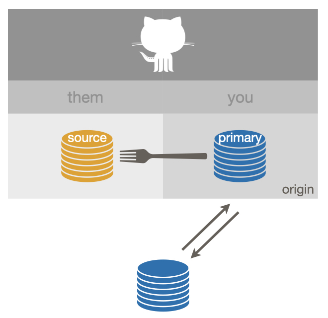

Chapter 6 Git remote setups
The previous part ended with some basics about Git remotes, such as how to define or rename one. Recall that a Git remote is another copy of the repo, usually living elsewhere (hence the term “remote”), that you can pull changes from or push changes to. Remotes are the foundation for all collaborative Git work.
But knowing the mechanics of how to add or rename a remote does little good if you don’t know why or when to do it. Luckily, we have very strong opinions about how you should set up your remotes, all motivated by getting you prepared for smooth, happy collaborative work.
In this part we describe various remote setups that are common (for better or worse) and what they are good for (or what’s wrong with them and how to fix). We only consider a very constrained set of remotes here:
- The remote is on GitHub, e.g. its URL looks something like
https://github.com/OWNER/REPO.gitorgit@github.com:OWNER/REPO.git. - The remote is named
originorupstream. These may not be the most evocative names in the world, but they are the most common choices.
If you use a different host or different remote names, you should still be able to translate these examples to your setting.
Along the way, we note how these setups relate to the usethis package, i.e. how usethis can help you get into a favorable setup or how a favorable setup unlocks the full power of usethis. Many of these operations – including characterizing your GitHub remotes – require that you have configured a GitHub personal access token. See section D.1 for more details on why and how to do that. If you don’t use usethis, feel free to ignore these asides. 2020-10 note: this currently refers to features in a development version of usethis. These features will appear in usethis v2.0.0.
6.1 No GitHub
As a starting point, consider a local Git repo that is not yet connected to GitHub.

This is not very exciting, but sets the stage for what’s to come. We introduce the icon we use for a Git repo, which looks like a stack of coins or a barrel. This one is blue, which indicates you have write permission.
How to achieve:
- With RStudio:
- Existing Project: Tools > Version Control > Project Setup, select Git as the version control system
- New Project: Make sure “Create a Git repository” is selected
- With usethis, existing project:
usethis::use_git() - Command line Git:
git init
usethis describes this setup as “no_github”.
6.2 All Yours
A common next step is to associate a local repo with a copy on GitHub, owned by you.

A remote named origin is configured and you have permission to push to (and
pull from) origin. (That’s why origin is colored blue and there are solid
arrows going both directions.) The origin remote on GitHub is what we’ll call
a source repo, meaning it is not a fork (i.e. copy) of anything else on
GitHub. In this case, origin is also what we’ll call your primary repo,
meaning it is the primary remote you interact with on GitHub (for this
project).
How to achieve if the local repo exists first:
- Command line Git or RStudio: You can’t complete this task fully from the
command line or from RStudio:
- Create a new GitHub repo in the browser, with the correct name, and capture its HTTPS or SSH URL
- Command line:
git remote add origin <URL> - In RStudio, click the New Branch button, which brings up a
window where you can create the
originremote with this URL. This workflow is described in Existing project, GitHub last. - Even now, the setup may not be ideal, because upstream tracking
relationships are probably not setup, which means you may not be able to
push and pull easily. You may need to explicitly configure an upstream
tracking branch for one or more local branches. Next time you want to
create a GitHub repo from a local repo, consider using
usethis::use_github(), which completes all of this setup in one go.
- With usethis:
usethis::use_github()
How to achieve if the remote repo exists first:
- In RStudio: Capture the source repo’s HTTPS or SSH URL and do File > New Project > Version Control > Git, described more fully in New RStudio Project via git clone
- With usethis:
usethis::create_from_github("OWNER/REPO", fork = FALSE) - Command line:
git clone <URL>, with the source repo’s HTTPS or SSH URL
usethis describes this setup as “ours”.
6.3 Ours
Here is a variation on “ours” that is equivalent in practice.

A remote named origin is configured and you can push to (and pull from)
origin. As above, origin is a source repo, meaning it is not a fork (or
copy) of anything else on GitHub. The origin remote is, however, not owned by
you. Instead it’s owned by another GitHub user or organisation. origin is also
your primary repo in this setup.
How does this happen?
- The source repo is owned by an organisation and your role in this organisation confers enough power to create repos or to push to this repo.
- The owner of the source repo has added you, specifically, as a collaborator to this specific repo.
How to achieve? The procedure is the same as for the previous “ours” setup. But
remember to specify usethis::use_github(organisation = "ORGNAME") if you want
to create a new repo under an organisation, instead of your personal account.
usethis describes this setup as “ours”.
6.4 Fork (of theirs)
This is an ideal setup if you want to make a pull request and generally follow the development of a source repo owned by someone else.

This shows a successful “fork-and-clone”.
Your local repo can pull changes from the source repo, which is configured as
upstream, which you cannot push to (but you can pull from).
You have a fork of the source repo (a very special copy, on GitHub) and it is
configured as origin. origin is your primary repo. You can push to and pull
from origin. You can make a pull request back to the source repo via your
fork.
How to achieve:
- Command line Git or RStudio: You can’t complete this task fully from the
command line or RStudio:
- Fork the source repo in the browser, capture the HTTPS or SSH
URL of your fork, then use
git remote clone <FORK_URL>(command line) or RStudio’s File > New Project > Version Control > Git workflow. But, wait, you’re not done! If you stop here, you will have the incomplete setup we refer to as “fork (salvageable)”, below. - You still need to add the source repo as the
upstreamremote. Capture the HTTPS or SSH URL of the source repo. At the command line, dogit remote add upstream <SOURCE_URL>or click RStudio’s New Branch button, which brings up a window where you can add theupstreamremote. - Even then, the setup may not be ideal, because your local default branch
is probably tracking
origin, notupstream, which is preferable for a fork.usethis::create_from_github()completes all of this setup in one go.
- Fork the source repo in the browser, capture the HTTPS or SSH
URL of your fork, then use
- With usethis:
usethis::create_from_github("OWNER/REPO", fork = TRUE)
6.5 Fork (salvageable)
Here is one last fork setup that’s sub-optimal, but it can be salvaged.

This is what happens when you do fork-and-clone and you only do fork-and-clone. What’s missing is a connection back to the source repo.
How does this happen?
- Cloning your own fork, either via
git clonein the shell or through a Git client, such as RStudio. And then stopping here.
If you only plan to make one pull request, this setup is fine. When the exchange is done, delete your local repo and your fork and move on with your life. You can always re-fork in the future. But if your pull request stays open for a while or if you plan to make repeated contributions, you’ll need to pull ongoing developments in the source repo into your local copy.
Fix this by adding the source repo as your upstream remote.
Capture the HTTP or SSH URL of the source repo and then:
- With usethis:
usethis::use_git_remote(name = "upstream", url = "SOURCE_URL") - Command line Git:
git remote add upstream <SOURCE_URL> - With RStudio: click the New Branch button, which brings up a window where
you can add the
upstreamremote with this URL.
Even now, the setup may not be ideal, because your local default branch is
probably tracking origin, not upstream, which is preferable for a fork. Next
time you do fork-and-clone, consider using usethis::create_from_github(fork = TRUE) instead, which completes all of this setup in one go.
usethis describes this setup as “fork_upstream_is_not_origin_parent”.